Ogni contributo verifica fonti primarie e indica cosa cambia per il destinatario. Mai marketing, mai pareri travestiti.
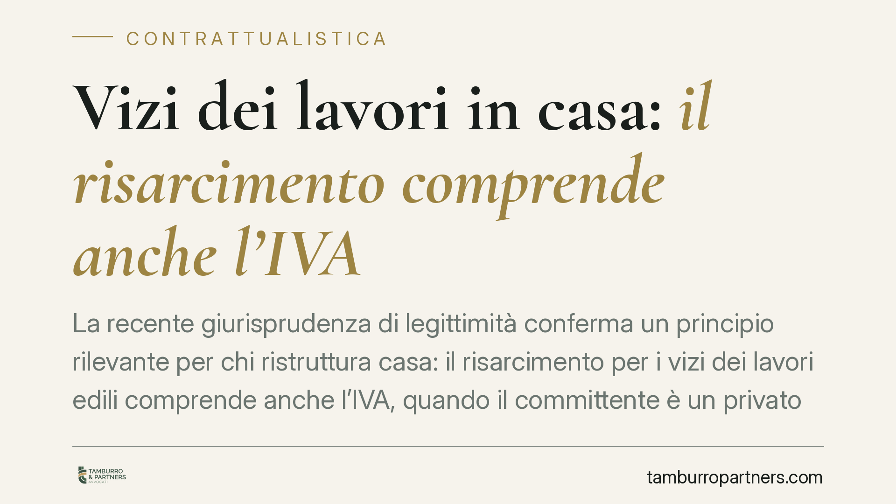
La recente giurisprudenza di legittimità conferma un principio rilevante per chi ristruttura casa: il risarcimento per i vizi dei lavori edili comprende anche l'IVA, quando il comm…
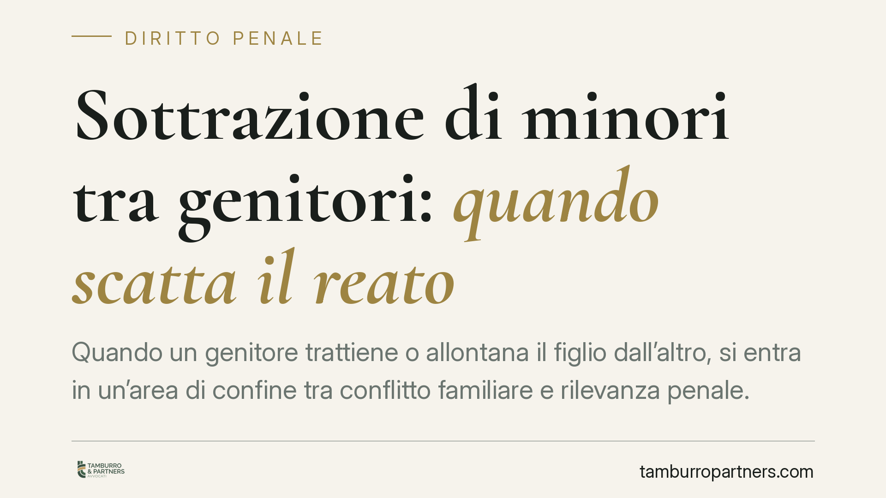
Quando un genitore trattiene o allontana il figlio dall'altro, si entra in un'area di confine tra conflitto familiare e rilevanza penale. Un orientamento della Cassazione sposta l'…
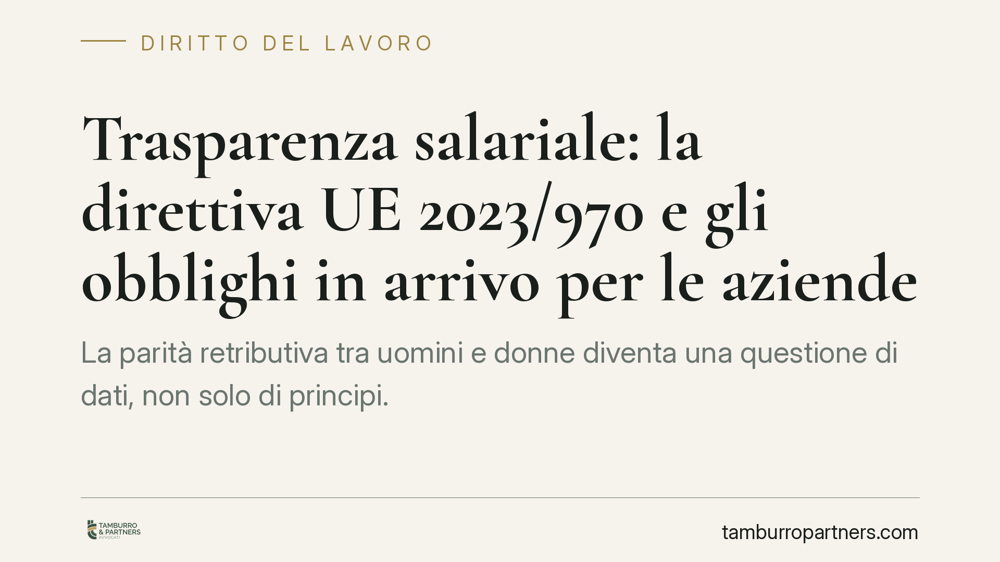
La parità retributiva tra uomini e donne diventa una questione di dati, non solo di principi. La direttiva UE 2023/970 impone alle aziende obblighi di trasparenza sulle retribuzion…
Le Sezioni unite penali chiariscono un nodo delicato: le garanzie dell'art. 103 c.p.p. valgono anche quando ad essere indagato è l'avvocato stesso. Ispezioni, perquisizioni e seque…
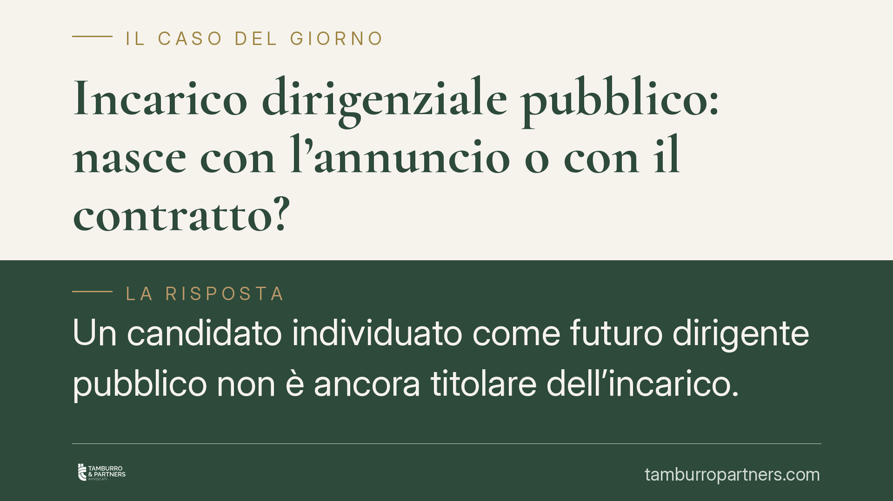
Un candidato individuato come futuro dirigente pubblico non è ancora titolare dell'incarico. La Cassazione ribadisce che il rapporto nasce solo con l'atto formale di conferimento e…
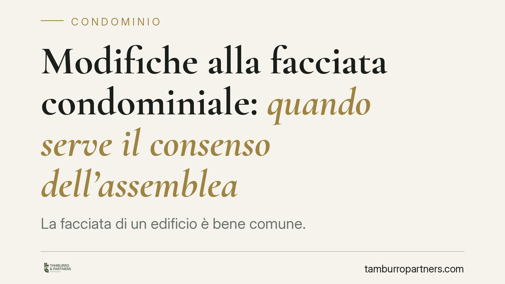
La facciata di un edificio è bene comune. Una recente pronuncia del TAR Campania torna sul punto: prima di rilasciare un titolo edilizio su interventi che incidono sul prospetto, i…
Un licenziamento comunicato con un messaggio vocale su WhatsApp è valido? Il Tribunale di Grosseto, con la sentenza 323/2026, torna sul nodo della forma del recesso datoriale. La q…
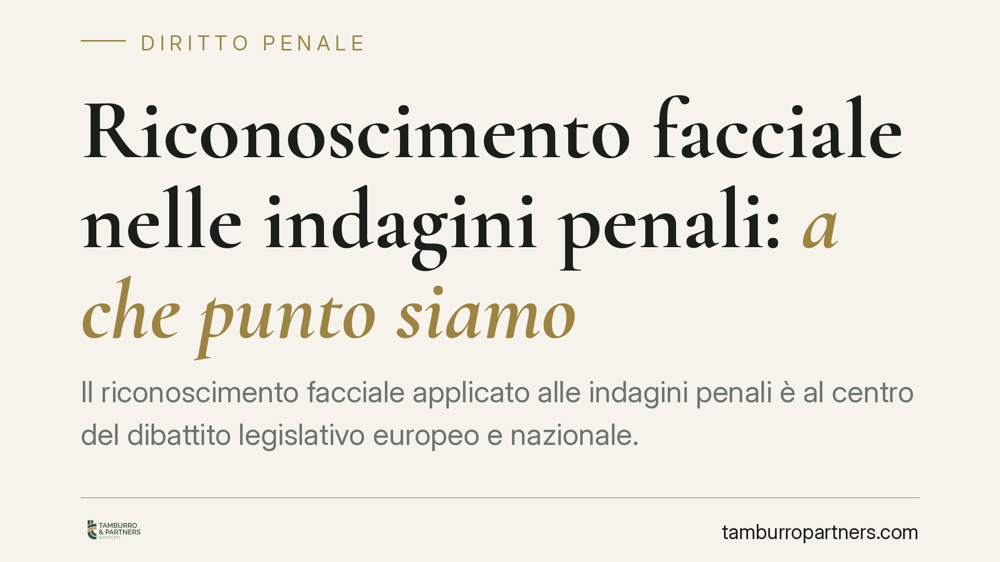
Il riconoscimento facciale applicato alle indagini penali è al centro del dibattito legislativo europeo e nazionale. Non esiste ancora, nell'ordinamento italiano, una disciplina or…
Il Tribunale di Messina, con sentenza n. 1138/2026, ha ritenuto utilizzabili gli screenshot WhatsApp dei turni per provare l'orario effettivamente svolto, a condizione che ne siano…
Un testamento scritto a mano su tre fogli separati, in momenti diversi e firmato solo alla fine può essere valido. Lo ha riconosciuto una recente pronuncia di merito, in applicazio…
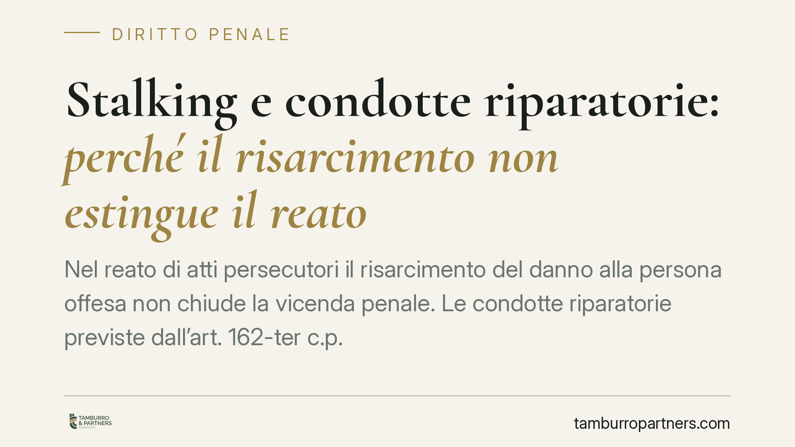
Nel reato di atti persecutori il risarcimento del danno alla persona offesa non chiude la vicenda penale. Le condotte riparatorie previste dall'art. 162-ter c.p. non operano per lo…
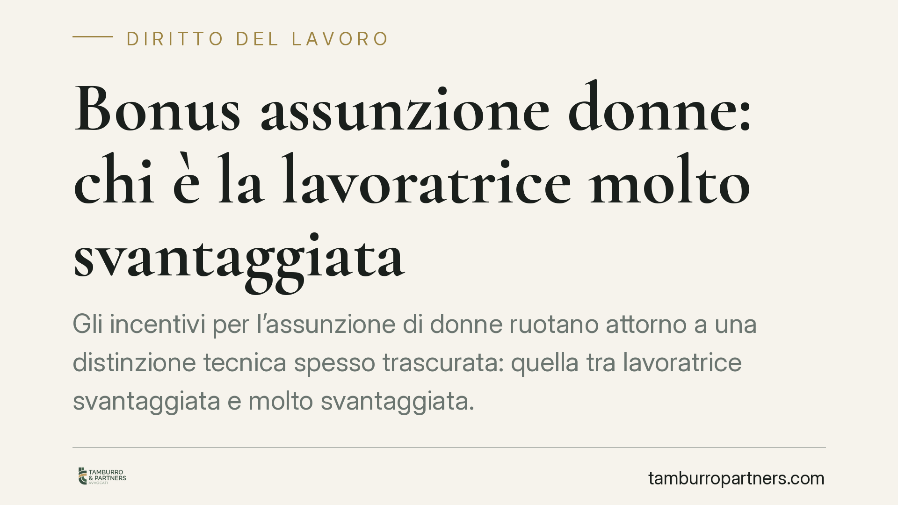
Gli incentivi per l'assunzione di donne ruotano attorno a una distinzione tecnica spesso trascurata: quella tra lavoratrice "svantaggiata" e "molto svantaggiata". Da questa qualifi…
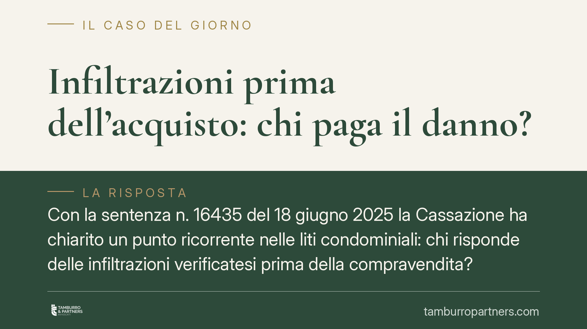
Con la sentenza n. 16435 del 18 giugno 2025 la Cassazione ha chiarito un punto ricorrente nelle liti condominiali: chi risponde delle infiltrazioni verificatesi prima della comprav…
Un dissuasore posto davanti al cancello condominiale può impedire la sosta abusiva senza violare i diritti degli altri condomini. Secondo un recente orientamento della Cassazione, …
La notifica formalmente regolare non equivale sempre a conoscenza effettiva del processo. Per la persona offesa vittima di violenza domestica, trasferita in una casa rifugio ad ind…
Il pagamento di una somma alla persona offesa, anche integrale, non cancella l'accusa di atti persecutori. La linea che emerge dalla giurisprudenza costituzionale conferma che lo s…
È in corso di attuazione una disciplina che rende più agevole, sul piano probatorio, la posizione di chi subisce danni da sistemi di intelligenza artificiale. Si parla di esibizion…
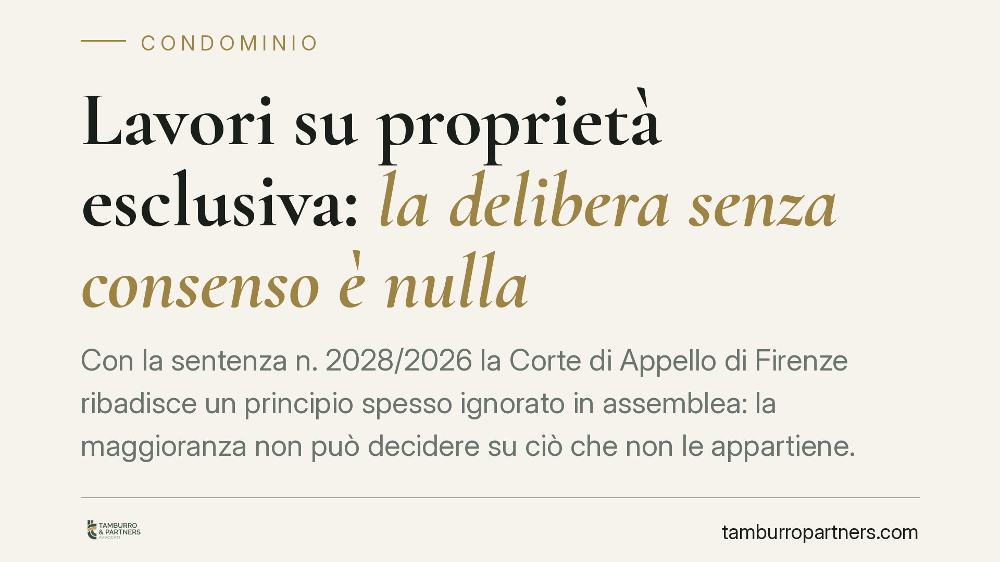
Con la sentenza n. 2028/2026 la Corte di Appello di Firenze ribadisce un principio spesso ignorato in assemblea: la maggioranza non può decidere su ciò che non le appartiene. La de…
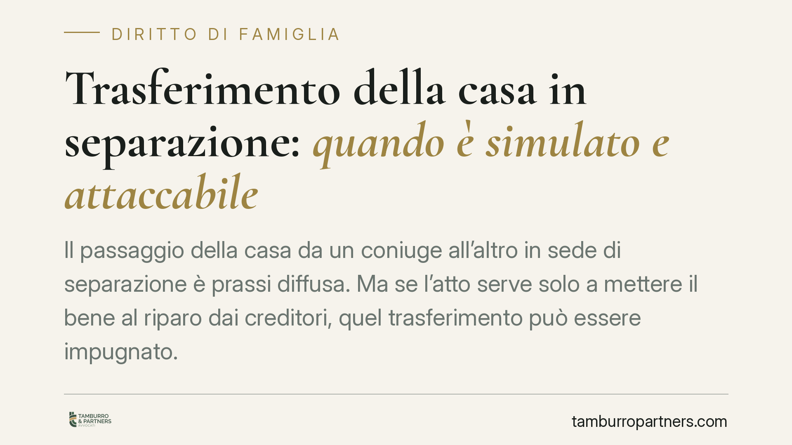
Il passaggio della casa da un coniuge all'altro in sede di separazione è prassi diffusa. Ma se l'atto serve solo a mettere il bene al riparo dai creditori, quel trasferimento può e…
Secondo un orientamento della giurisprudenza tributaria di merito, gli avvisi di accertamento che contestano costi da subappalti come fittizi possono essere annullati quando l'uffi…
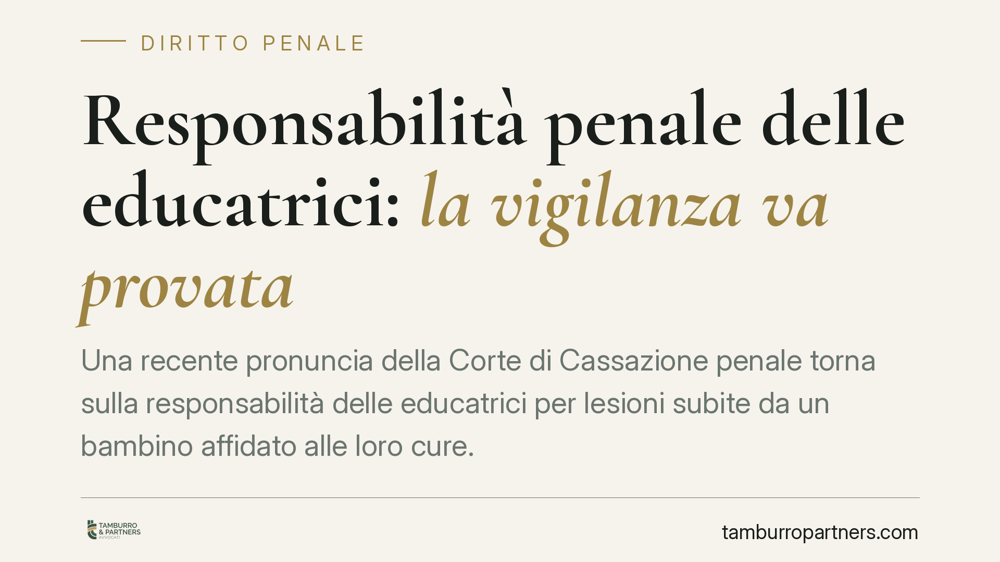
Una recente pronuncia della Corte di Cassazione penale torna sulla responsabilità delle educatrici per lesioni subite da un bambino affidato alle loro cure. Il principio è duplice:…
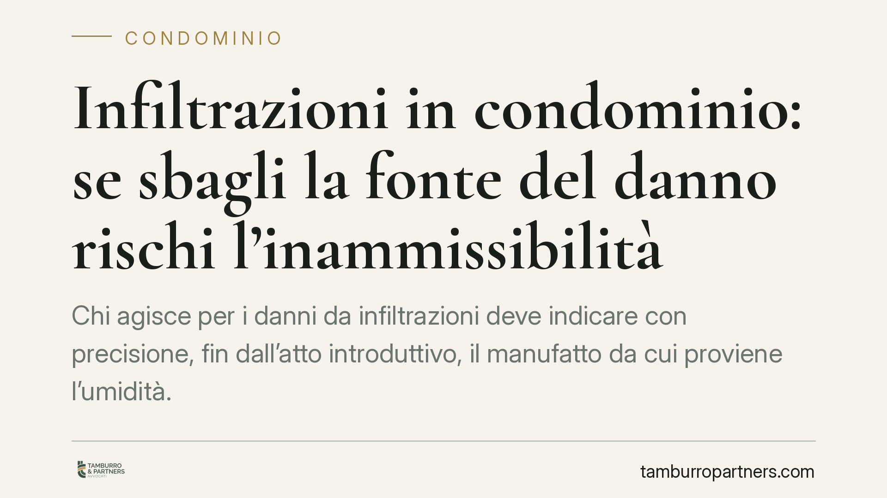
Chi agisce per i danni da infiltrazioni deve indicare con precisione, fin dall'atto introduttivo, il manufatto da cui proviene l'umidità. Secondo una recente pronuncia della Cassaz…
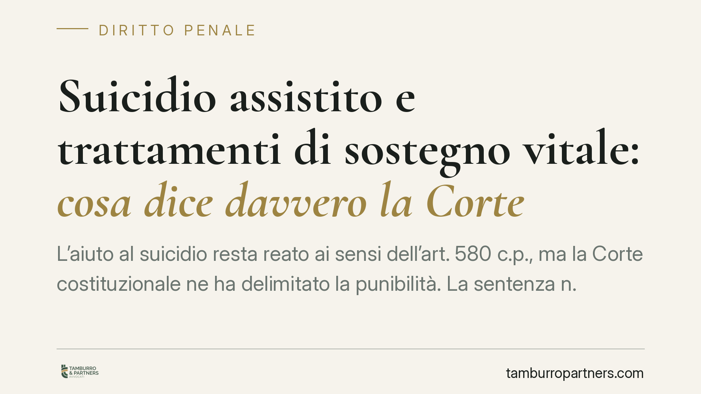
L'aiuto al suicidio resta reato ai sensi dell'art. 580 c.p., ma la Corte costituzionale ne ha delimitato la punibilità. La sentenza n. 242/2019 individua quattro condizioni cumulat…
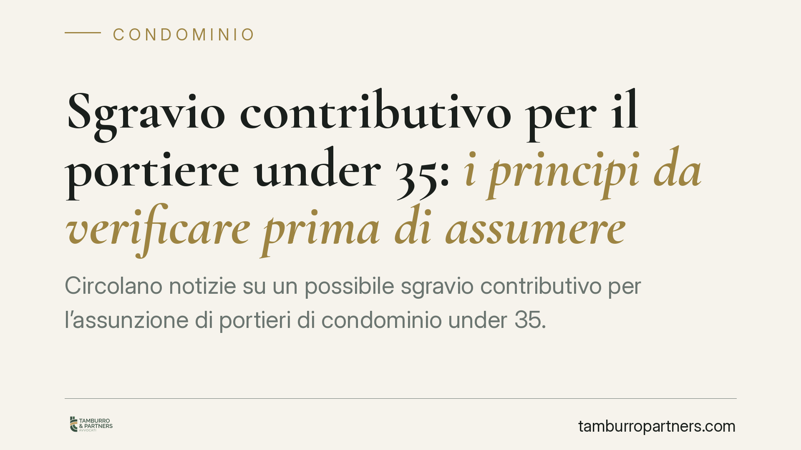
Circolano notizie su un possibile sgravio contributivo per l'assunzione di portieri di condominio under 35. Prima di deliberare in assemblea occorre distinguere ciò che è certo da …
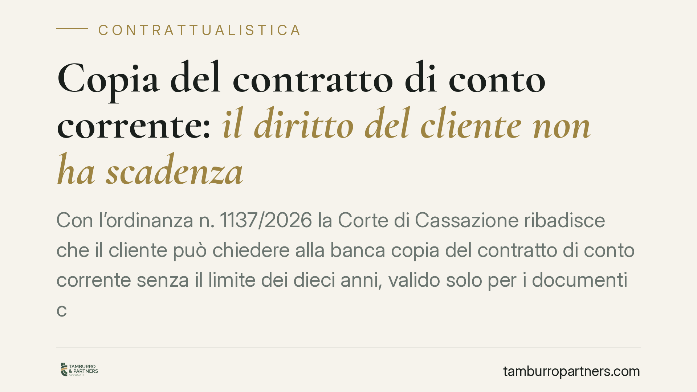
Con l'ordinanza n. 1137/2026 la Corte di Cassazione ribadisce che il cliente può chiedere alla banca copia del contratto di conto corrente senza il limite dei dieci anni, valido so…
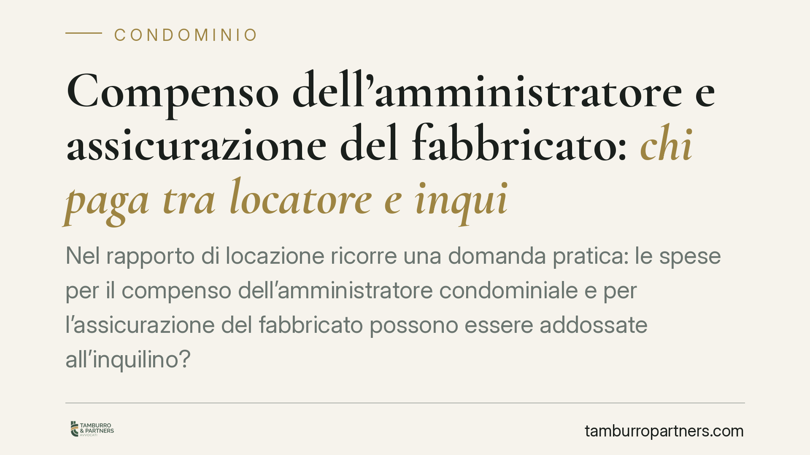
Nel rapporto di locazione ricorre una domanda pratica: le spese per il compenso dell'amministratore condominiale e per l'assicurazione del fabbricato possono essere addossate all'i…
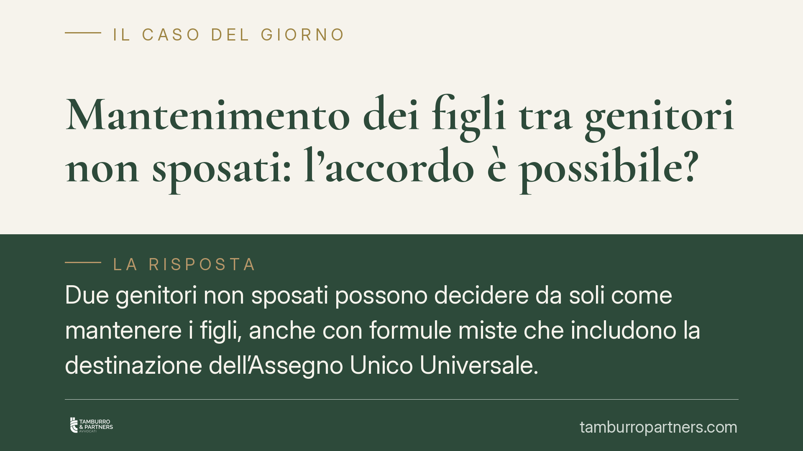
Due genitori non sposati possono decidere da soli come mantenere i figli, anche con formule miste che includono la destinazione dell'Assegno Unico Universale. Il tribunale, però, n…
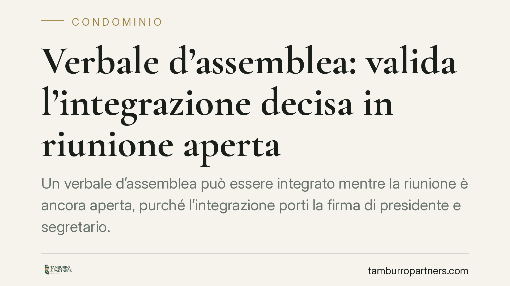
Un verbale d'assemblea può essere integrato mentre la riunione è ancora aperta, purché l'integrazione porti la firma di presidente e segretario. Lo ribadisce una recente pronuncia …
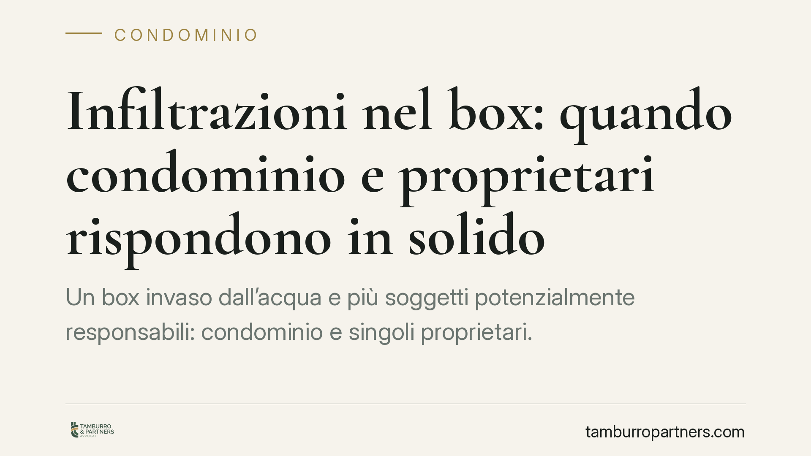
Un box invaso dall'acqua e più soggetti potenzialmente responsabili: condominio e singoli proprietari. Una recente ordinanza della Corte di Cassazione conferma che, in caso di dann…
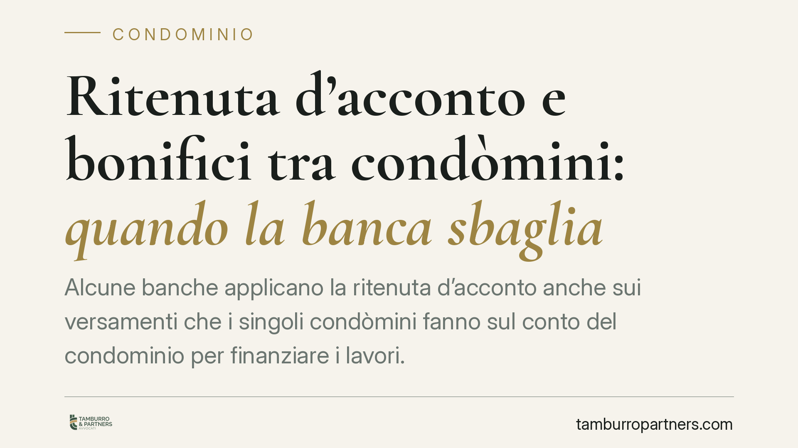
Alcune banche applicano la ritenuta d'acconto anche sui versamenti che i singoli condòmini fanno sul conto del condominio per finanziare i lavori. Una recente pronuncia di merito h…